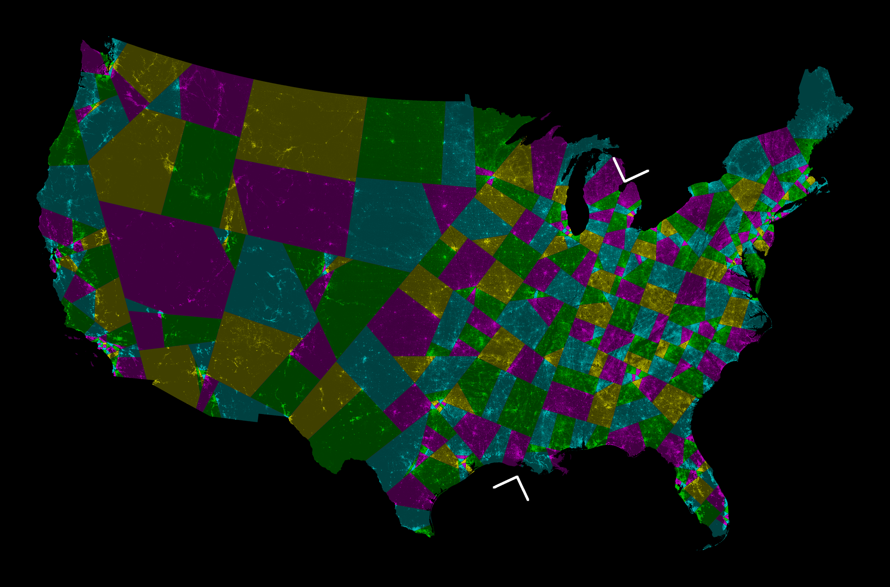
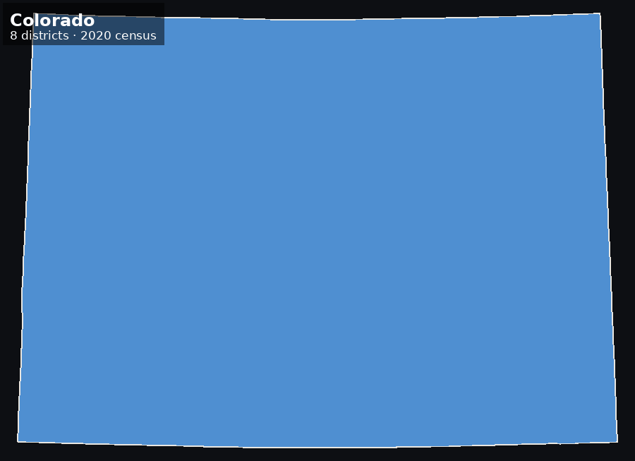
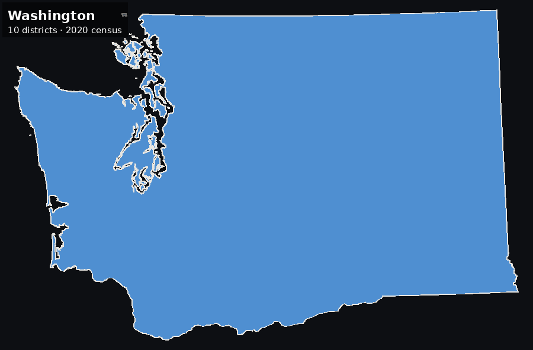
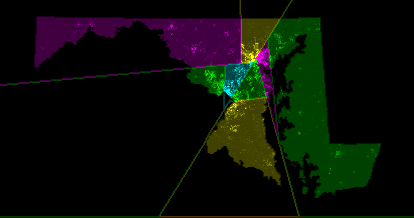
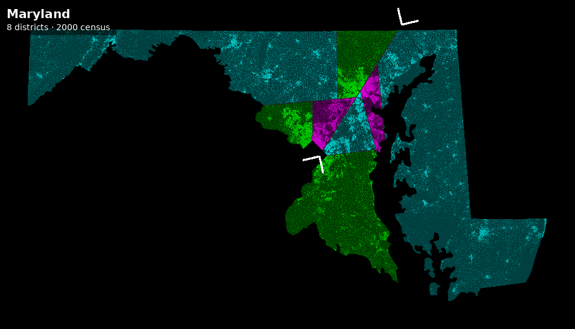
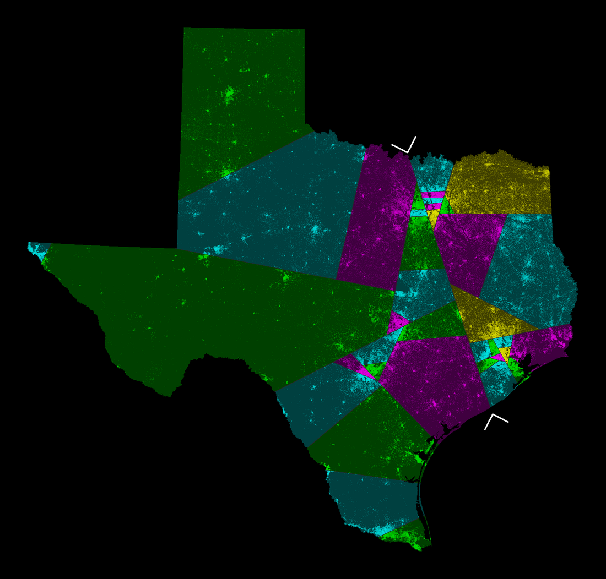
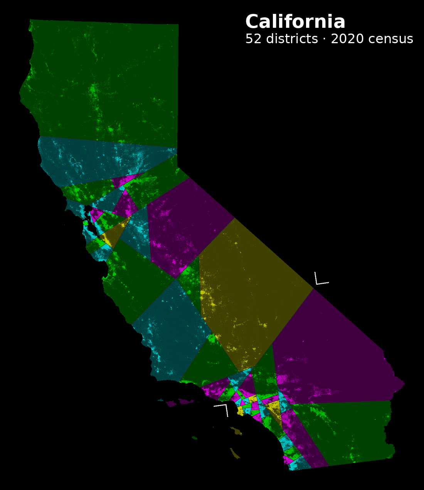

Counterfactual legislatures
What would this legislature look like if the rules for electing it were different?
Three countries so far, and two different questions. In the United States the constituencies are drawn by hand, so the question is what a map drawn without any political input would have produced. In Brazil and Spain the constituencies are states and provinces that nobody redraws, so the whole question is the arithmetic that hands them seats — and both countries put a floor under it that costs something measurable.
Every number on this page comes out of a published input and code in the repository, and every section had to reproduce something already known before it was allowed to produce anything new. Those checks are named as they come up; they are the reason to believe any of the rest.
United States
US congressional districts are drawn by state legislatures — the people who then run in them. The shortest splitline method removes every human decision: cut the state in two with the shortest straight line that leaves the right number of people on each side, then recurse. No communities of interest, no incumbents, no voting history. Just population and geometry.
These maps are rebuilt from the 2000, 2010 and 2020 censuses — about 8 million census blocks per run. Brightness is population density, so the cities show up as the bright speckle.
The contiguous United States, 432 districts

One cut at a time
Every map is a binary tree of straight lines, so the whole thing can be replayed:


Does it reproduce the original?
The Center for Range Voting published splitline maps from the 2000 census in 2009. Rebuilding them from scratch is the test of whether any of this is right: same census, same seat count, same algorithm, independently written code.


Overlaid, 99.6% of Maryland's land falls in the same district in both, and all eight districts correspond one to one, each overlapping between 97% and 100% of its counterpart. What disagreement is left is a single pixel wide and lies along the cut lines themselves — two renderers rounding the same boundary to opposite sides of a pixel, rather than any district actually being drawn differently.
A few states


What the maps change
A map is only interesting if you can score it. Each district of the splitline map and of the map actually in force is scored on the presidential vote cast in it, block by block — not the congressional vote, because block-level House returns barely exist. So these numbers measure the partisan balance of the ground a seat is drawn on, not who would have won the seat. In 2012 Obama carried 209 districts under the enacted map while Democrats won 201 seats; an eight-seat gap between those two things is normal.
Checked first: scoring the enacted map of the 113th Congress on 2012 presidential votes has to return exactly 209 D / 226 R, the published count of districts Obama carried. It does. A naive version of the same join — allocating each county's votes by population instead of by block — returns 239, a 30-seat error larger than the effect being measured.
Splitline removes about two thirds of the pro-Republican bias
“Bias” below is seat share minus vote share, in percentage points, positive for Democrats. Same votes, same states, same blocks; only the lines differ.
| Contest | D vote % | Enacted D | bias | Splitline D | bias | swing | control |
|---|---|---|---|---|---|---|---|
| 2012 president | 51.86 | 209 | −3.81 | 231 | +1.24 | +22 | R → D |
| 2016 president | 51.01 | 202 | −4.57 | 215 | −1.58 | +13 | R → R |
| 2020 president | 52.18 | 221 | −1.37 | 229 | +0.47 | +8 | D → D |
| 2016–20 composite | 51.68 | 215 | −2.26 | 221 | −0.88 | +6 | R → D |
That last figure matters more than it looks. The 65% was computed at one point in a space of modelling choices — how a block's population is spread over its area, and whether a cut's length counts the water it crosses. Rerunning the whole scoring at every available combination moves the answer between 63% and 65%, so the headline is the finding rather than the parameter.
One axis could not be tested, and saying so is the point of having a check at all. Varying the size of the House breaks the comparison: the seven states with no block-level election data published for them are exactly the states with a single district, which need none, and a bigger House gives them two. They then drop out of every map in the run including the enacted one, whose score moves although nothing about the enacted map has changed. Those runs are recorded as failures, not as results.
The interesting failure: 2016 does not flip
Democrats carried the 2016 two-party presidential vote 51.0–49.0 and would still have held only 215 of 435 districts under splitline — three short of a majority. Splitline moves 13 seats and that is not enough.
This is the result worth dwelling on, because it separates two explanations that are routinely conflated. The Democratic seat deficit is not purely a gerrymandering artifact. A large part of it is political geography: Democratic voters are concentrated in dense cities and win those districts with enormous margins, wasting votes, while Republican margins are spread more efficiently across suburbs and countryside. A compactness-maximising, party-blind rule cannot fix that, because the concentration is real and compact districts respect it.
So the honest summary is that redistricting reform recovers roughly two thirds of the measured bias, and the remaining third is geography, not cartography.
It is more compact, and where it is not is informative
Compactness is what splitline claims, so it should be measured rather than assumed. The measure here is the average distance from a resident to the centre of their own district, population-weighted — which is also Brian Olson's objective. It is used because it needs no district outlines: the enacted map arrives as a list of census blocks with no boundaries attached, so perimeter-based scores cannot be computed for the very map the comparison needs.
| State | Districts | Enacted | Splitline | Change |
|---|---|---|---|---|
| North Carolina | 13 | 50.0 km | 35.7 km | −28.6% |
| Pennsylvania | 18 | 35.7 km | 25.7 km | −28.1% |
| Texas | 36 | 57.3 km | 41.5 km | −27.6% |
| Illinois | 18 | 33.2 km | 26.6 km | −19.9% |
| Virginia | 11 | 47.6 km | 39.7 km | −16.5% |
| Washington | 10 | 36.7 km | 47.7 km | +29.7% |
The states where splitline wins biggest are the maps of the decade that were litigated, redrawn by courts, or both. The measure was chosen for being computable on both maps, not for detecting gerrymanders, and it finds them anyway.
Washington is the exception and it is not noise. Its enacted map was drawn by a bipartisan commission, so there was no gerrymander to undo; and its population sits in one dense strip along Puget Sound with a mountain range and an empty east behind it. A rule that cuts on the shortest straight line runs those cuts through the strip and pairs Seattle neighbourhoods with hundreds of kilometres of the Cascades, which a commission drawing to communities of interest will not do. Splitline beats a map drawn to win seats and loses to a map drawn to respect geography.
It is race-blind, and it is not race-neutral
This is the finding that cuts against everything above, and it is the largest effect on the page.
Voting-age population by race and Hispanic origin, from the census table that makes the categories mutually exclusive, over all 435 districts. Counts are districts in which the group exceeds the stated share.
| Group | National % | >50% enacted | >50% splitline | Change | 30–40% |
|---|---|---|---|---|---|
| Hispanic | 14.23 | 30 | 22 | −8 | 19 → 23 |
| non-Hispanic White | 67.04 | 338 | 346 | +8 | 32 → 30 |
| non-Hispanic Black | 11.57 | 22 | 5 | −17 | 11 → 26 |
| non-Hispanic Asian | 4.81 | 1 | 0 | −1 | 4 → 4 |
Black-majority districts fall from 22 to 5, a 77% reduction. Districts where Black voters are 30–40% of the voting-age population more than double, 11 to 26. The population is not disappearing; it is being spread across more districts in concentrations too small to elect a candidate of choice.
This is the mechanism the Voting Rights Act exists to prevent, and it is the predictable consequence of a rule that cuts on the shortest available straight line. Majority-minority districts are frequently non-compact by necessity — they follow a river, a rail corridor, a chain of neighbourhoods — and an algorithm blind to race by construction cannot see them.
These two findings are the same phenomenon seen from two sides. Majority-minority districts pack the most reliably Democratic voters in the country into a few seats won with 80% margins. Dissolving them is simultaneously why splitline gains Democrats seats and why it destroys Black descriptive representation. A reform that improves partisan proportionality by unpacking a party's most loyal constituency is not obviously a reform, and the trade-off should be stated in those terms rather than resolved by picking whichever metric flatters the conclusion.
Which votes the lines could have decided
Bias is a summary statistic; a roll call is an outcome. Every House vote from the 113th to the 117th Congress is screened for the two conditions that make it sensitive to the districting at all: it has to be close to the threshold that actually applied to it, and divided between the parties, since a vote both parties split evenly does not move when the composition does.
The threshold is not always a simple majority. A motion under suspension of the rules, or a veto override, needs two thirds — so one carried 290–140 fails, and measuring it against the other side's total would fill the shortlist with comfortable losses.
Each state's delegation is then resampled at constant size. This is where the US differs structurally from the two countries below: apportionment fixes how many members a state sends, so splitline changes which districts it has and not how many. Where splitline gives one party k more districts in a state, k members of the other party are drawn out of that delegation and k are drawn in from that state's own members of the receiving party — with their votes, their defections and their absences.
| Congress | As elected | Difference | Counterfactual | Control | Reverse |
|---|---|---|---|---|---|
| 113th (2013–15) | 201 D / 234 R | +22 | 223 D / 212 R | R → D | 371 |
| 114th (2015–17) | 188 D / 247 R | +22 | 210 D / 225 R | R → R | 76 |
| 115th (2017–19) | 194 D / 241 R | +13 | 207 D / 228 R | R → R | 53 |
| 116th (2019–21) | 235 D / 200 R | +13 | 248 D / 187 R | D → D | 2 |
| 117th (2021–23) | 222 D / 213 R | +8 | 230 D / 205 R | D → D | 5 |
Almost three quarters of the movement is one Congress, and the reason is in the table rather than in the model: +22 seats is precisely what turns 201–234 into 223–212. Once control of the chamber changes, every party-line vote near the threshold goes with it — which is why 371 of 537 candidates reverse in the 113th and only 2 of 414 in the 116th, where Democrats already held the majority and the extra seats changed nothing that was close.
Among the reversals: the American Health Care Act, passed 217–213 in May 2017; the Agriculture and Nutrition Act of 2018, passed 213–211; the Student Success Act, passed 218–213; and in the other direction the 2014 Veterans' Access to Care Act, which failed 205–207.
A probability of 1.000 appears often, and it does not mean certainty. The only uncertainty modelled is which members sit and what they do — 22 seats against a two-vote margin swamps that. It is not behavioural uncertainty: the model assumes a member arriving in a redrawn district votes like their new party's other members from the same state, and that assumption comes with no error bar. Read these as “the seat arithmetic no longer supports this outcome”, not as a forecast.
Checked: the recomputed yes and no counts reproduce the published tallies on all 5,679 roll calls; seats by party reproduce the published composition of all five Congresses; and run with no seats moved, the resampling returns every recorded tally exactly and with zero variance, so the spread above comes from seats that moved rather than from the machinery.
Brazil
No districting algorithm is needed here and nothing is estimated: the constituency is the state, the states are not going to move, and the electoral authority publishes the votes. The whole question is the arithmetic.
Article 45 of the 1988 Constitution makes Chamber seats proportional to state population and then contradicts itself: no state may have fewer than 8 seats or more than 70. Nine elections from 1990 to 2022 are recomputed with the same votes, the same chamber size and the same within-state rule, changing only that.
São Paulo goes from 70 seats to 112; Roraima, Amapá and Acre from 8 to 2. On the 1991 census the distortion is larger still, 16.6× falling to 1.5×.
There are in fact two distortions, and they are usually discussed as one. The seat table has not moved since 1993, so it is not the Constitution's rule but the rule's 1993 output, left in place for thirty years — Pará should have 21 seats on the 2010 census and has 17. Recomputing the constitutional rule itself on current population disagrees with the real table in eleven to fourteen states at every census. The freeze redistributes unfairness among the middle-sized states; the floor and ceiling create it at the extremes.
And it barely touches the party system
This is the result worth arguing about. Brazil's apportionment is an enormous violation of one-person-one-vote and is nonetheless only a minor source of partisan disproportionality.
| Scenario | Gallagher | vs. actual |
|---|---|---|
| As it stands | 4.62 | — |
| Constitutional rule recomputed on current population | 4.64 | +0% |
| Floor and ceiling removed | 4.03 | −13% |
| One national 513-seat district | 0.72 | −84% |
The over-represented states are not a partisan bloc, so their gains and losses largely cancel. São Paulo's 42 extra seats move a governing coalition by about four, because São Paulo is not a bloc either: it is less centrist-for-hire than the country but more polarised, running above the national share for both government and opposition, so its extra seats split between the two sides.
What does drive disproportionality is district magnitude. Fourteen of the 27 units elect ten members or fewer, and an electoral quotient in an eight-seat district is 12.5% of the vote — a threshold far above anything Brazil imposes explicitly. Small parties are excluded by arithmetic, not by rule. The floor and ceiling are an equality-of-voters problem, not a proportionality problem, and anyone claiming the cap on São Paulo distorts the party system has the numbers against them.
What it does change is what the chamber can pass
Party composition barely moves, and every president since 1990 clears both the majority and the three-fifths bar under either apportionment. But individual roll calls split regionally even when parties do not, and those are exactly what the apportionment decides. Of 4,318 plenary divisions since 2003, 56 fall within ten votes of the threshold that applied to them; reweighting those, 16 are more likely than not to have gone the other way.
The clearest case is a constitutional amendment on charging tuition at public universities, rejected 304 to 139 in March 2017 — it needed 308 and fell four short. Reweighted, its expected yes count is 314, with a 95% probability of clearing the bar. The mechanism is visible directly: São Paulo gains 41 seats and voted yes at 0.70 per seat, while the states losing seats voted yes at 0.12 to 0.25. This is a real regional split, not an artifact of resampling.
And the one everyone asks about: the amendment lowering the age of criminal responsibility to 16, rejected five short of the bar in June 2015, reweights to a coin flip — 57%. The honest statement is that a chamber apportioned by population would have been on a knife edge, not that it would have passed.
Checked: the 1990 and 1994 seat tables reconcile row by row and column by column against their published totals, and the two independent vote compilations used agree on total valid votes to within half a percent — to 0.000% in 1998. Run with the real apportionment, the reweighting reproduces every tally exactly.
Spain
Same shape as Brazil, different numbers and a much stranger law. The Congress of Deputies has 350 seats. Every province gets an initial two, Ceuta and Melilla one each, and the remaining 248 are shared out in proportion to population.
A resident of Soria weighs 4.13 Madrid residents: 44,189 people per seat against 182,442. And the ratio has widened at every election since 2008, from 3.71 to 4.13, without a single change to the rule. Depopulation of the interior does the work — the floor is fixed at two seats and the provinces sitting on it keep losing people.
| Scenario | Vote-weight ratio | Loosemore–Hanby | Seats moved |
|---|---|---|---|
| The law as written | 4.13× | 10.52 | — |
| Provincial floor cut from 2 seats to 1 | 3.50× | 5.46 | 18 |
| No floor at all | 2.35× | 1.97 | 36 |
| Sainte-Laguë instead of quota and remainders | 4.13× | 10.52 | 0 |
| One national 350-seat district | 1.00× | 0.00 | — |
Cutting the floor from two seats to one halves the disproportionality and moves 18 seats: Madrid goes from 37 to 44 and Barcelona from 32 to 37, paid for by one seat each from eighteen interior provinces. Removing the floor altogether moves 36 and takes Madrid to 50.
Changing the method instead does almost nothing. Replacing quota-and-remainders with the Sainte-Laguë divisors moves one seat in two of the seven elections and none in the other five — and in 2008 the one seat it moves makes the vote-weight ratio worse, handing Soria a third seat. Spain's malapportionment lives in the floor, not in the arithmetic.
Two caveats worth stating. The vote-weight ratio falls only from 4.13 to 3.50 when the floor is halved, because Ceuta and Melilla still hold a seat each on about 85,000 people and they set the ratio once Soria stops doing so; the ratio is an extreme and the index is a total, and they are measuring different things. And none of this touches D'Hondt, which in Spain is not the apportionment rule at all but the rule for turning votes into seats within a province — where, in a five-seat province, it does more damage than the floor does. Testing that needs the province-level party votes, which are published as fixed-width records with no independent total to check a column offset against, so they are deliberately left alone rather than guessed at.
Checked, and this one was unexpectedly interesting: the law says the basis is the población de derecho but neither it nor any decree says which edition of the population register. So rather than assume, the rule is run against every edition the statistical institute publishes, and the ones reproducing the official seat table exactly are recorded. All seven elections reproduce 52 provinces out of 52, and the edition that works is in every case the most recent one published before the decree.
What this is for
Not a proposal. Splitline districts ignore everything people reasonably care about, and multi-member proportional representation is almost certainly a better answer. The point is that a politically blind map is a measuring stick: the difference between it and the enacted map is a minimum of how much the real map was shaped by something other than geography.
That question got sharper in April 2026, when the Supreme Court held in Louisiana v. Callais that a state may draw districts for any political purpose regardless of racial effect. The defence is now “our intent was partisan, not racial” — and a map drawn with no political input at all is the natural thing to measure it against.
Across the three countries one pattern keeps recurring, and it was not the expected one. The rules that are easiest to get indignant about are not the ones doing the damage. Brazil's eight-seat floor is a 16-fold violation of one-person-one-vote and costs the party system 13% of its disproportionality; pooling the country into one district costs it 84%. Spain's apportionment method could be swapped for a fairer one and nothing would move; its two-seat floor is worth 18 seats. And an American map drawn with no politics in it recovers two thirds of the partisan bias while destroying three quarters of the Black-majority districts. In each case the big, visible, arguable rule turns out to matter less than a quieter structural one next to it.
The longer aim is to carry this to more countries and electoral systems, and then ask whether legislatures elected under different rules would have voted differently on policies whose effects we can actually measure. The roll-call sections above are the first step of that, and they are the part most likely to be wrong in ways the checks cannot catch.